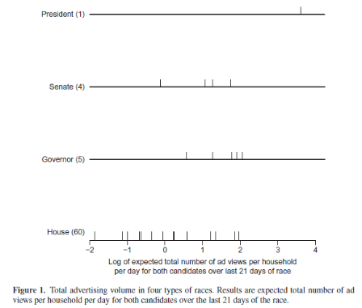
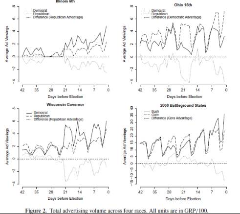
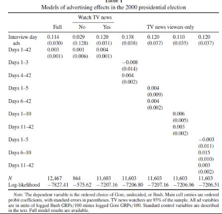
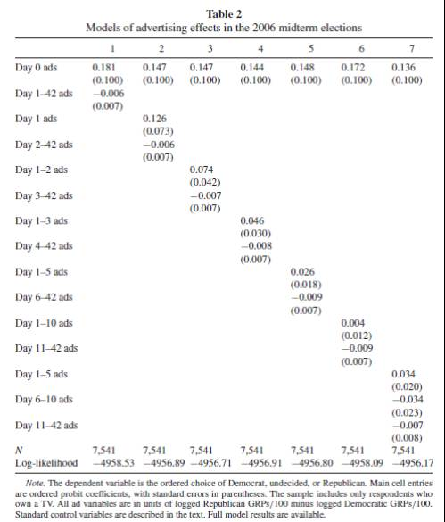
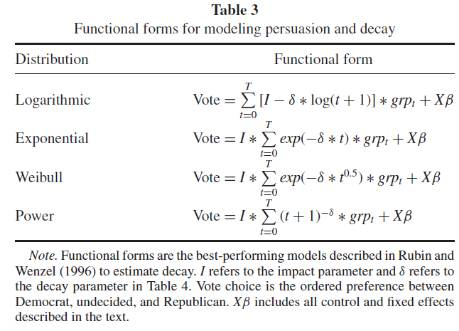
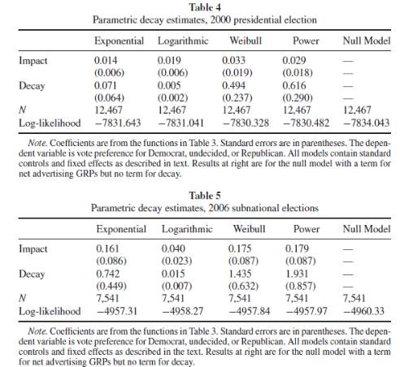
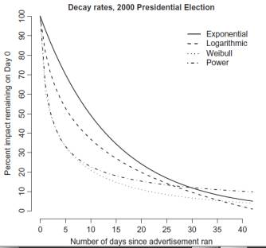
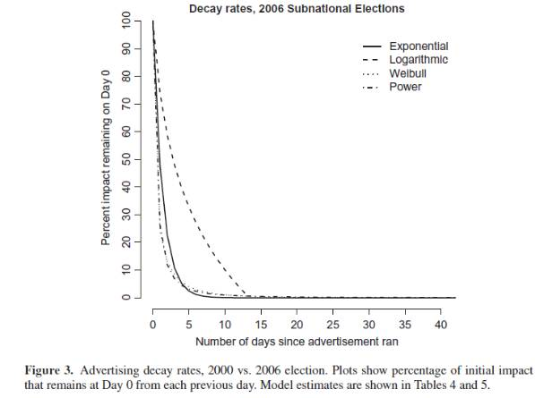

收录于合集 #政治传播 12个
文献来源： Seth J. Hill, James Lo, Lynn Vavreck, etal. How Quickly We Forget: The Duration of Persuasion Effects From Mass Communication[J]. Political Communication, 2013, 30(4):521-547.
作者简介： Seth J. Hill，加州大学圣地亚哥分校政治学系助理教授；James Lo，曼海姆大学改革政治经济学中心博士后研究员；Lynn Vavreck，加州大学洛杉矶分校政治学与传播研究系助理教授；Jhon Zaller，加州大学洛杉矶分校政治学系教授。 ** **
编者按： 在与读者相伴的167天中，我们陆续为大家推送了比较历史分析、民主与民主化、政党与选举研究、政治经济学和社会科学研究方法等领域的文献。从本期开始，政文观止将为大家开辟崭新的板块——政治心理与政治传播。人们为什么会被带节奏？谣言为何屡禁不止？意识形态是天生的还是塑造的？世界上是否存在没有偏见的信息？如果你也对这些问题感兴趣，千万不要错过这个系列的推送哦。今天，我们将要一起学习的问题是： How quickly we forget？
** ******
理论回顾：
作者指出，既有的文献已经充分说明，政治传播的效果是很短暂的。几个星期甚至几天之后，人们对于先前的政治传播（竞选、广告、报道等）就会充分遗忘。企图通过某一次政治传播来长久改变政治态度或政治行为的努力几乎都是徒劳的。不幸的是，社会心理学家着重刻画人们对于政治传播的遗忘模式，而大众传播的研究者则拒绝承认政治传播的失效。两者之间的鸿沟使得政治传播的本质与效果迟迟得不到揭示。
经典理论认为，公民的意见（opinion）有两种形成方式。一种是记忆-评估（memory-based evaluation），另一种则是在线处理（online processing）。在前一种模式中，人们只是根据记忆中已经存在的具体信息来表达意见，当被传播的信息被遗忘时，政治传播也就失效了。在后一种模式中，人们接受传播的同时就进行了仔细思考并即时更新了自己的态度，即使信息被遗忘，但态度却持久地固定了下来。
经验证据表明这两种模式很有可能是同时存在的，然而大部分公民只是粗略地接受了政治传播携带的信息却未曾加以认真思考，因此大部分的公民意见来自记忆- 评估而非在线处理。不难理解，在这种情况下，政治传播的深度和持久度都很不乐观，当具体的信息被遗忘时，政治传播也就失效了，政治态度与政治行为的改变也随之被抹去。
**
**
数据概览：
在这篇文章中，作者主要考察了美国2000年总统选举和2006年各级选举的情况。作者综合运用了不同来源、多种维度的数据。2000年选举个体层面的数据来自2000年国家安能博格选举研究（NAES），包含12000个公民样本。2000年政治传播的数据来自竞选媒体分析集团（CMAG），涵盖了美国75个传播分区（Media market）的广告投放情况。2006年选举的个体数据来自2006年协作国会选举研究（CCES），政治传播数据则来自Nielsen公司。
在作者的研究中，政治传播的强度以毛评点（GRPs）来计算。毛评点即“传播到达”与“出现频率”的乘积。譬如政治传播如被100%的目标观众观看5次，则毛评点为500 。为了方便计算，作者将毛评点除以100放入回归模型。
下图是政治传播相关数据的描述性统计：


如图所示，作者发现：1. 选举层级越高，投放的广告也就越多。2. 在邻近选举的几周内，广告投放将会激增。3. 政治传播具有明显的周期性，周末是政治传播的平静期。
回归分析：
面对如此丰富的数据，作者首先将政治传播的数据贴合到个体数据层面，以公民的选举倾向为因变量，以其所在地区的政治传播强度作为自变量构建了有序probit回归模型。在这一模型中，作者控制了党派倾向、先前选举结果、政治新闻、实体竞选等变量。
2000年总统选举的数据分析结果如下：

在回归表格中，作者将政治传播分割成不同的时间段。第1列显示，受访者当天接受的政治传播的作用，要比之前6周内政治传播的总和强38倍。这说明最晚近的政治传播拥有最强的传播效果。第2、3列则表明，文章考察的政治传播只对频繁使用电视的受众有显著作用。随后几列则对政治传播的时间段进行了更细的分割。结果表明，政治传播效果的衰竭速率一开始非常快，随后则趋于缓和。譬如受访者10天前接受的政治传播与前11到前42天之间的政治传播的效果并没有太大不同。
出于样本量的考虑，作者将2006年三场选举（州长、参议院、众议院）的数据进行统合，放入了同一个回归模型中，结果如下：

总体而言，回归结果与2000年总统选举是相似的。不同的地方在于，在较低层次的选举中：1.受访当天的政治传播效果更强；2. 政治传播效果的衰竭更快。
精确建模：
在回归分析的基础上，作者尝试建立起政治传播衰败的精确模型。既有的文献提供了如下几种可能的函数模型：

这些函数具有单调性、不对称等共性，同时也各具特色：对数函数表明衰竭是随着时间的比例而变化的，第1天和第2天的差距等于第10天和第20天的差距。指数函数则明确了不同时间内衰败的速率是成比例的。作者对不同函数的拟合情况画出了图表：



结果显示，对于2000年总统选举而言，幂函数和韦伯分布函数的拟合度最优；对于2006年的三场选举，指数函数的拟合优度最优，但其与幂函数和韦伯分布函数的差异并不明显。作者的假设在精确的数学模型中得到了进一步的证明：总体而言，政治传播一经投放就开始迅速衰竭，其衰竭速度则由快到慢逐步放缓，最为晚近的政治传播的效果可以媲美先前所有传播的总和。换言之，在政治传播中，人们大多只是被动接受信息，很少有人会主动而积极地思考，当具体信息被遗忘时，政治传播的效果也就烟消云散了。
编后记： 在这篇文章的最后一部分，作者又探讨了一个全新的问题：既然政治传播的效果如此短暂，政治传播还有现实意义吗？出于篇幅与难度的考虑，小编没有全部译出，在这里也给读者留个悬念，感兴趣的朋友可以点击“阅读原文”。
推荐阅读：
-
Lippmann W. Public opinion[M]. TransactionPublishers, 1946.
-
McCombs M. Setting the agenda: Mass mediaand public opinion[M]. John Wiley & Sons, 2014.
-
Zaller J. The nature and origins of massopinion[M]. Cambridge university press, 1992.
-
马得勇, 孙梦欣. 新媒体时代政府公信力的决定因素——透明性、回应性抑或公关技巧?[J]. 公共管理学报,2014(1):104-113.
-
马得勇, 王丽娜. 中国网民的意识形态立场及其形成一个实证的分析[J]. 社会, 2015, 35(5):142-167.
-
马得勇,张志原. 公共舆论的同质化及其心理根源——基于网民调查的实证分析[J]. 清华大学学报(哲学社会科学版),2017,(04):174-190+195.
-
邵梓捷，张小劲，孟天广.政治传播视角下《新闻联播》的宣传模式分析[J].清华大学学报(哲学社会科学版),2015,30(3):30-42
-
王丽娜, 马得勇. 新媒体时代媒体的可信度分析——以中国网民为对象的实证研究[J]. 武汉大学学报(人文科学版), 2016, 69(1):88-99.
政观编辑部